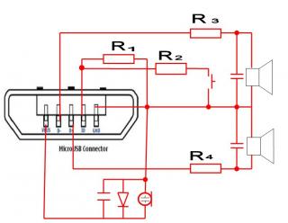

Распайка датакабеля USB-microUSB
Распайка переходника с microUSB на стерео наушники
Решил поделится опытом по переделки стандартной гарнитуры в общем раскурочил стандартную гаргнитуру и подключил по приведенной семе, miniJack взял от гарнитуры SonyEricsson. Сопротивление подбирал подстроечным резистором телефон определяет гарнитуру при R=2~4kOm.
Цветовая распиновка кабеля VBus(сиреневый), D-(красный), D+(зеленый), ID(синий), GDN(черный).

Вид на разъем коммуникатора
Сопротивление оригинальных "ушек" - по 32 Ома.
Сверху - левый, снизу - правый.
Распайка оригинальной гарнитуры
Вот нарисовал полную схему стандартной гарнитуры:

Вид на разъем коммуникатора.
Уши: сверху - левый, снизу - правый.
Знаю номиналы только R3,R4=10 Ом остальные детали один профессор выпаял и где-то посеял.
Конденсаторы все 1000пФ.
Резисторы R3=R4 - чем меньше тем быстрее мы уши посадим... видимо оптимально до 50 Ом (не кило).
R1 намного больше чем R2, видимо на порядок.
Заикаться о значениях не буду но видно по схеме , что порядок ориентировочно 2-3 кОм и шунтирующий 0,1кОм ...до макс.1 кОм